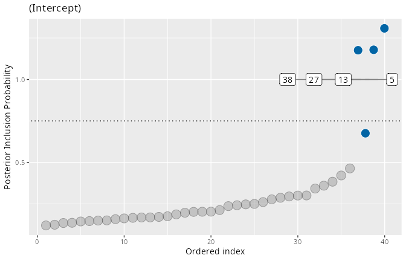
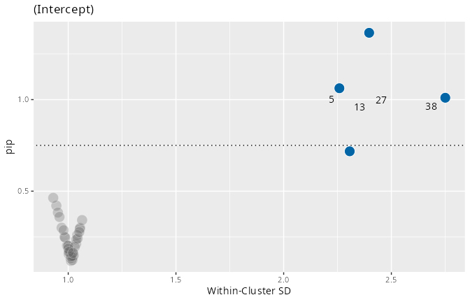
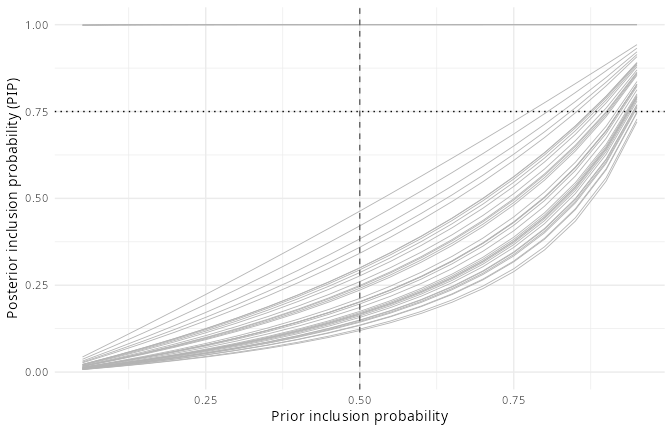

Interpreting posterior inclusion probabilities
Source:vignettes/interpreting-pips.Rmd
interpreting-pips.RmdThe headline output of an ivd fit is one
posterior inclusion probability (PIP) per cluster
(school, participant, …) and random scale effect: the posterior
probability that the cluster’s residual-variance random effect belongs
to the slab rather than the spike – in other words,
that the model needs a cluster-specific deviation from the average
residual variance. A large PIP flags a cluster that is substantially
more (or less) variable than the others; whether it is more or less
variable is read off the sign of the associated random effect
(u_mean in pip()).
PIPs convert directly to posterior odds: a PIP of 0.75 means the cluster is three times as likely to belong to the slab as to the spike. With the default prior inclusion probability of 0.5 those odds are also Bayes factors.
This vignette walks through the tools for interpreting PIPs on data where the truth is known, using the package’s own simulator.
A simulation with known deviant clusters
simulate_ivd() generates data from the intercept-only
mixed-effects location-scale model with a chosen set of deviant
clusters. Here, clusters 5, 13, 27 and 38 get a within-cluster SD 2.5
times the baseline:
library(ivd)
sim <- simulate_ivd(J = 40, n_j = 50, deviant_clusters = c(5, 13, 27, 38),
deviant_factor = 2.5, seed = 123)
sim
#> Simulated MELSM data: 40 clusters, 2000 observations
#> Baseline within-cluster SD: 1 (location grand mean 0, tau_loc 0.5)
#> 4 deviant cluster(s): 5, 13, 27, 38 (SD factor 2.5)
fit <- ivd(y ~ 1 + (1 | id), ~ 1 + (1 | id), data = sim$data,
niter = 2000, nburnin = 2000, workers = 4, seed = 456)
fit
#> Individual variance detection (ivd) model
#>
#> Location: y ~ 1 + (1 | id)
#> Scale: ~1 + (1 | id)
#> Data: 2000 observations in 40 clusters
#> Sampling: 4 chains, 2000 post-warmup draws each
#> Diagnostics: max split-Rhat = 1.259, min n_eff = 19(The max split-Rhat looks alarming; it belongs to individual
random-effect draws whose chains disagree only while their inclusion
indicator is switching. Whether that matters for the PIPs themselves is
exactly what pip_diagnostics() answers below; see also
vignette("convergence-and-robustness", package = "ivd").)
Reading the PIPs
pip() returns one row per cluster and scale random
effect:
pips <- pip(fit)
head(pips[order(-pips$pip), ], 6)
#> scale_var cluster_index cluster_id pip u_mean u_sd
#> 5 (Intercept) 5 5 1.000 0.8028 0.103
#> 13 (Intercept) 13 13 1.000 0.8217 0.102
#> 27 (Intercept) 27 27 1.000 0.8632 0.100
#> 38 (Intercept) 38 38 1.000 0.9932 0.103
#> 25 (Intercept) 25 25 0.463 -0.0853 0.116
#> 10 (Intercept) 10 10 0.421 -0.0698 0.105The four planted deviant clusters are recovered with PIP 1.000, well
separated from the rest, and their positive u_mean values
correctly identify them as more variable than the baseline. The
same information is available graphically:
plot(fit, type = "pip")
The funnel plot relates each cluster’s PIP to its estimated within-cluster SD, showing at a glance which flagged clusters are unusually consistent (left arm) versus unusually inconsistent (right arm):
plot(fit, type = "funnel")
From PIPs to decisions: pip_fdr()
The conventional threshold of PIP >= 0.75 (posterior
odds 3:1) is a convention, not a law. When you need a defensible cutoff,
pip_fdr() selects the largest set of clusters whose
estimated Bayesian false discovery rate – the average
of 1 - PIP among the selected – stays below a target level
(Newton et al., 2004). The implied threshold adapts to the data:
pip_fdr(fit, fdr = 0.05)
#> Bayesian FDR decision rule (target FDR <= 0.05)
#>
#> Random scale effect: (Intercept)
#> Selected 4 of 40 clusters (implied PIP threshold >= 1.000, expected FDR = 0.000):
#> cluster_id pip local_fdr cum_fdr
#> 5 1 0 0
#> 13 1 0 0
#> 27 1 0 0
#> 38 1 0 0Exactly the four true deviant clusters are selected, with an expected
FDR of zero. On real data the selection is rarely this clean; the
returned data frame carries every cluster’s local_fdr and
the running cum_fdr so you can see how quickly the expected
error accumulates as the threshold is relaxed, and
attr(sel, "thresholds") can be fed straight into
plot(fit, pip_level = ...).
Is the classification robust to the prior?
pip_sensitivity()
PIPs depend on the prior inclusion probability
(ss_prior_p, 0.5 by default).
pip_sensitivity() recomputes them analytically over a grid
of priors – no refitting – by converting the posterior odds to
prior-independent Bayes factors:
sens <- pip_sensitivity(fit)
plot(sens)
Clusters whose classification at the threshold flips within a plausible perturbation of the fitted prior (halving to doubling its odds, by default) are highlighted; classifications that survive the whole window can be reported without a prior caveat.
Is the PIP itself trustworthy? pip_diagnostics()
A PIP is the posterior mean of a binary indicator, so the usual
split-Rhat is not informative for it. pip_diagnostics()
reports each PIP’s Monte Carlo error and – most importantly – whether
the classification agrees across chains:
pip_diagnostics(fit)
#> PIP Monte Carlo diagnostics (4 chains, classification at PIP >= 0.75)
#>
#> Max. MCSE of a PIP: 0.036
#> Max. between-chain PIP range: 0.157
#> All 40 PIPs are classified consistently across chains.Despite the noisy-looking global Rhat above, every one of the 40 PIPs
is classified the same way by all four chains – the quantity this
package is actually about is stable. Clusters flagged
unstable here should not be classified either way without
more iterations.
The full workflow
- Fit with
ivd()and checkprint(fit)andpip_diagnostics(fit). - Inspect
plot(fit, type = "pip")and the funnel plot. - Choose the cutoff deliberately: the 0.75 convention, or
pip_fdr(fit, fdr = ...)for an error-rate-controlled selection. - Confirm the selection is prior-robust with
plot(pip_sensitivity(fit)). - Report the selected clusters with their PIPs,
u_meandirection, and the decision rule used.
References
Newton, M. A., Noueiry, A., Sarkar, D., & Ahlquist, P. (2004). Detecting differential gene expression with a semiparametric hierarchical mixture method. Biostatistics, 5(2), 155–176.
Carmo, M., Williams, D. R., & Rast, P. (2026). Beyond average scores: Identification of consistent and inconsistent academic achievement in grouping units. Journal of Educational and Behavioral Statistics.